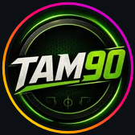

SON DAKİKA
CANLI
TAM 90 Spor Portalı üzerinden TFF resmi puan durumu ve anlık futbol gelişmeleri yükleniyor...

CANLI SKOR, PUAN DURUMU & HABER MERKEZİ
TFF Resmi Verileri ve 7/24 Son Dakika Futbol
@tamdoksanaresmi
🔥 TÜM SON DAKİKA
🦁 GALATASARAY
🐦 FENERBAHÇE
🦅 BEŞİKTAŞ
🌊 TRABZONSPOR
🏆 SÜPER LİG
🌍 AVRUPA & ŞAMPİYONLAR LİGİ
⚽️ 9. HAFTA & AVRUPA
MS • 9. HAFTA
Alanyaspor
1 - 2
Kocaelispor
🔥 26 EKİM 21:30
Galatasaray
DERBİ
Fenerbahçe
BUGÜN 19:00
Samsunspor
v
Amed SF
UCL • MS
Lille
2 - 4
Galatasaray
UCL • MS
Fenerbahçe
2 - 2
Slavia Prag
UEL • MS
Beşiktaş
2 - 2
Crystal Palace
FLAŞ GELİŞME
SON DAKİKA
Az Önce
YÜKLENİYOR...
GÜNÜN SON DAKİKA MANŞETLERİ
Canlı Akış Aktif
×
TAM 90 ÖZEL
FUTBOL
Bugün
Haberin Kaynağına Git ↗
Instagram'da Yorumlara Katıl